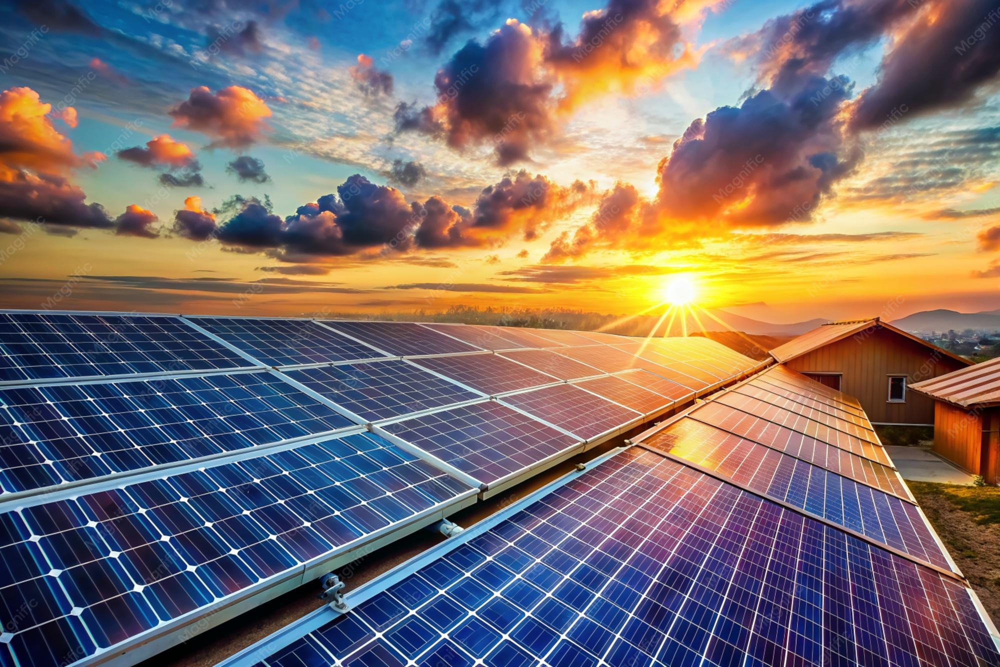
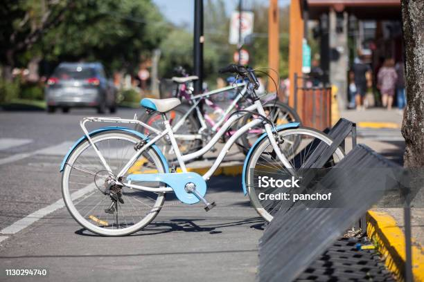
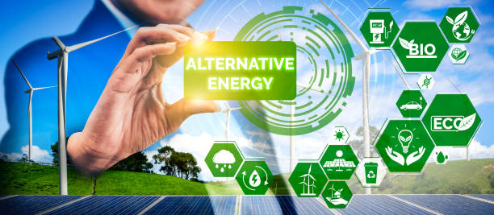
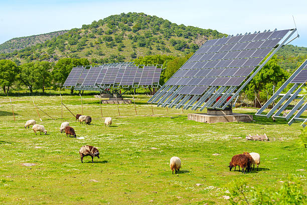
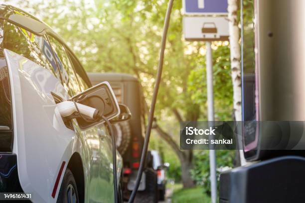
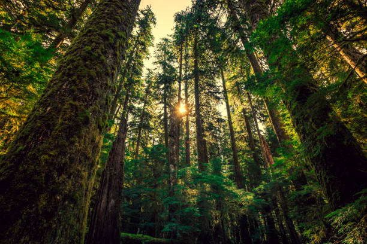

Os Objetivos de Desenvolvimento Sustentável (ODS) fazem parte da Agenda 2030, um plano de ação global estabelecido pela Organização das Nações Unidas (ONU) em 2015. Ele reúne 17 objetivos universais e 169 metas integradas para erradicar a pobreza, proteger o meio ambiente e garantir que todas as pessoas desfrutem de paz e prosperidade até o ano de 2030. Esses objetivos abrangem questões sociais, econômicas e ambientais interligadas, reconhecendo que as ações em uma área afetam os resultados de outras.
ODS 7: Energia Limpa e Acessível O ODS 7 foca em um dos motores mais essenciais para a sociedade moderna: a energia. O objetivo central é: "Garantir o acesso a uma energia confiável, sustentável, moderna e a preço acessível para todos." A energia é fundamental para a maioria dos desafios e oportunidades atuais — desde a criação de empregos, segurança e mudanças climáticas até a produção de alimentos e aumento de rendimentos.
Metas |
|
|---|---|
| 7.1 |
Até 2030, assegurar o acesso universal a serviços de energia modernos, fiáveis e a preços acessíveis
Indicadores 7.1.1 Percentagem da população com acesso à eletricidade 7.1.2 Percentagem da população com acesso primário a combustíveis e tecnologias limpas |
| 7.2 |
Até 2030, aumentar substancialmente a participação de energias renováveis na matriz energética global
Indicadores 7.2.1 Peso das energias renováveis no consumo total final de energia |
| 7.3 |
Até 2030, duplicar a taxa global de melhoria da eficiência energética 7.a Até 2030, reforçar a cooperação internacional para facilitar o acesso às tecnologias e investigação sobre energias limpas, incluindo energias renováveis, eficiência energética e tecnologias de combustíveis fósseis avançadas e mais limpas, e promover o investimento em infraestrutura de energia e em tecnologias de energia limpa 7.b Até 2030, expandir a infraestrutura e modernizar a tecnologia para o fornecimento de serviços de energia modernos e sustentáveis para todos nos países em desenvolvimento, particularmente nos países menos desenvolvidos, nos pequenos Estados insulares em desenvolvimento e nos países em desenvolvimento sem litoral, de acordo com os seus respetivos programas de apoio Indicadores 7.3.1 Intensidade energética medida em termos de energia primária e de PIB 7.a.1 Fluxos financeiros internacionais para países em desenvolvimento para apoio à pesquisa e desenvolvimento de energias limpas e à produção de energia renovável, incluindo sistemas híbridos 7.b.1 Capacidade instalada de geração de energia renovável nos países em desenvolvimento (em Watts per capita) |
⚡ O que são Fontes de Energia Limpas e Renováveis?
Energia Solar, Eólica, Hídrica e Biomassa. O que são Fontes de Energia Limpas e Renováveis?
Energia Solar: Captação da luz e calor do sol através de painéis fotovoltaicos para gerar eletricidade e aquecimento.
Energia Eólica: Produção de energia a partir da força do vento através de turbinas eólicas.
Energia Hídrica / Hidroelétrica: Utilização da força da água dos rios e barragens para movimentar turbinas.
Biomassa e Biogás: Aproveitamento de matéria orgânica e resíduos para produzir energia de forma limpa e circular.

🚀 Soluções e Ações Práticas (O que podemos fazer?)
Ações no dia a dia dos cidadãos e ao nível dos governos.
No nosso dia a dia (Para os cidadãos):
Eficiência em casa: Usar lâmpadas LED, desligar aparelhos em standby e optar por eletrodomésticos com boa classe energética.
Consumo consciente: Reduzir o desperdício de energia no aquecimento e arrefecimento das habitações.
Mobilidade sustentável: Priorizar transportes públicos, mobilidade ativa (bicicleta/a pé) ou veículos elétricos.
Ao nível dos Governos e Empresas:
Transição acelerada dos combustíveis fósseis (carvão, petróleo, gás) para energias 100% renováveis.
Investimento na modernização das redes elétricas e no armazenamento de energia em baterias.
Apoio financeiro aos países em desenvolvimento para garantir a transição energética justa.

Para cumprir o ODS 7 (Energia Limpa e Acessível), governos, empresas e organizações mundiais estão a implementar várias ações e estratégias práticas a nível global e local.
1. Transição Energética e Investimento em Renováveis
Expansão de parques solares, acordos internacionais e fecho de centrais a carvão.
- Expansão de Parques Solares e Eólicos: Aceleração da instalação de painéis fotovoltaicos e aerogeradores (em terra e no mar).
- Acordos Internacionais (COP): Nações de todo o mundo comprometeram-se a triplicar a capacidade de energias renováveis até 2030.
- Encerrar Centrais a Carbão e Petróleo: Fecho progressivo de centrais elétricas altamente poluentes para reduzir as emissões.

2. Levar Eletricidade e Tecnologias Limpas às Regiões Isoladas
Minirredes off-grid e fogões limpos. Levar Eletricidade e Tecnologias Limpas às Regiões Isoladas
- Minirredes e Painéis Solares Off-Grid: Em zonas rurais da África e da Ásia onde a rede elétrica não chega, estão a ser instalados pequenos sistemas solares comunitários para ligar casas, escolas e hospitais.
- Fogões e Combustíveis Limpos: Programas de distribuição de fogões elétricos, a biogás ou a energia solar para substituir a queima de lenha e carvão dentro das habitações.

3. Eficiência e Inovação Tecnológica
Baterias de armazenamento, redes elétricas inteligentes e veículos elétricos.
- Baterias de Armazenamento: Desenvolvimento de grandes baterias para guardar a energia gerada pelo sol ou pelo vento quando não há luz solar ou sopro de vento, garantindo energia 24 horas por dia.
- Redes Elétricas Inteligentes (Smart Grids): Modernização da distribuição de eletricidade para evitar desperdícios.
- Eletrodomésticos e Veículos Elétricos: Incentivos para substituir carros a combustível por veículos elétricos e para fabricar aparelhos com consumo energético muito reduzido.

4. Exemplos Práticos em Portugal e na Europa
Estratégias nacionais de descarbonização e metas europeias.
- Estratégias Nacionais de Descarbonização: Apoios financeiros para famílias instalarem painéis solares em casa, trocarem janelas velhas ou usarem bombas de calor de alta eficiência.
- Metas Europeias: A União Europeia definiu como meta que pelo menos 42,5% de toda a energia consumida venha de fontes renováveis até 2030.
- Produção Recorde de Energia Limpa: Países como Portugal já conseguem cobrir longos períodos do ano utilizando apenas energia proveniente do sol, vento e água.

Preencha nosso formulário para receber mais informações
Para saber mais sobre a Agenda 2030, visite o portal ODS Portugal